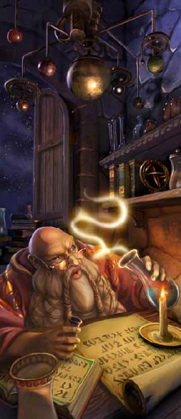

Temps morts
Une campagne permet aux personnages de se livrer à d'autres activités entre deux aventures. Laisser des jours, des semaines ou des mois entre les aventures étend la campagne sur une période de temps plus longue et permet de gérer la progression de niveau des personnages, les empêchant de prendre trop de puissance trop rapidement. Autoriser les personnages à poursuivre des intérêts secondaires entre les aventures les encourage également à plus s'investir dans le monde de la campagne. Quand un personnage est propriétaire d'une taverne dans un village ou passe du temps à faire la fête avec les habitants, le joueur de ce personnage est plus susceptible de réagir face aux menaces pesant sur le village et ses habitants.
À mesure que votre campagne progresse, les personnages de vos joueurs seront non seulement plus puissants, mais aussi plus influents et plus investis dans le monde. Ils pourraient être enclins à entreprendre des projets qui nécessitent plus de temps entre les aventures, comme la construction et l'entretien d'une place forte. À mesure que le groupe monte en niveau, vous pouvez rallonger les temps morts entre aventures pour donner aux personnages le temps dont ils ont besoin pour poursuivre ces objectifs. Alors que des jours ou des semaines peuvent s'écouler entre des aventures de bas niveau, la durée des temps morts entre des aventures de niveau supérieur peut être mesurée en mois ou en années.
Plus d'activités de temps morts
Le chapitre Partir à l'aventure du Manuel des Joueurs décrit quelques activités de temps morts pour combler le vide entre les aventures. Selon le style de votre campagne, les backgrounds et les intérêts particuliers des aventuriers, vous pouvez ajouter une partie ou la totalité des activités suivantes, en tant qu'option.
Construire une place forte
Un personnage peut passer du temps entre des aventures pour construire une place forte. Avant le début des travaux, le personnage doit acquérir une parcelle de terrain. Si la propriété se trouve dans un royaume ou autre système politique similaire, le personnage aura pour cela besoin d'une charte royale (un document légal donnant l'autorisation de superviser le domaine au nom de la couronne), d'une concession (un document légal donnant la garde du terrain au personnage aussi longtemps qu'il reste fidèle à la couronne) ou d'un acte de propriété (un document légal qui sert de preuve de propriété). Les terres peuvent également être acquises par héritage ou d'autres moyens. Les chartes royales et les concessions sont généralement offertes par la couronne comme une récompense pour de bons et loyaux services, mais elles peuvent également être achetées. Les actes de propriétés sont généralement achetés ou hérités. Une petite propriété pourrait se vendre pour seulement 100 po ou jusqu'à 1000 po. Une grande propriété pourrait coûter 5000 po ou plus, si elle peut être achetée.
Une fois que la propriété est obtenue, un personnage doit se procurer les matériaux de construction et les ouvriers. La table ci-dessous donne le coût de construction d'une place forte (y compris les matériaux et la main-d'œuvre) et le temps que cela prend, à condition que le personnage utilise ses temps morts pour superviser la construction. Le travail peut continuer durant son absence, mais chaque jour durant lequel le personnage est absent ajoute 3 jours à la durée de construction.
| Place forte | Coût | Temps de construction |
|---|---|---|
| Abbaye | 50 000 po | 400 jours |
| Siège de guilde, ville ou cité | 5 000 po | 60 jours |
| Donjon ou petit château | 50 000 po | 400 jours |
| Propriété de noble avec manoir | 25 000 po | 150 jours |
| Avant poste ou fort | 15 000 po | 100 jours |
| Palace ou grand chateau | 500 000 po | 1200 jours |
| Temple | 50 000 po | 400 jours |
| Tour fortifiée | 15 000 po | 100 jours |
| Comptoir commercial | 5 000 po | 60 jours |
Faire la fête
Les personnages peuvent passer leur temps mort à mener diverses activités hédonistes comme participer à des fêtes, boire plus que de raison, jouer de l'argent, ou toute autre chose qui les aide à faire face aux dangers auxquels ils sont confrontés lors de leurs aventures. Un personnage qui fait la fête dépense de l'argent comme s'il maintenait un style de vie riche (voir Dépenses). À la fin de la période passée à faire la fête, le joueur jette un dé de pourcentage et ajoute le niveau du personnage, puis compare le total dans la table ci-dessous pour déterminer ce qui se passe pour le personnage. Ou bien vous choisissez directement dans la table.
| d100+ niveau | Résultat |
|---|---|
| 01-10 | Vous êtes jeté en prison pour 1d4 jours à la fin du temps mort, accusé de trouble à l'ordre public et tapage. Vous pouvez payer une amende de 10 po pour éviter l'emprisonnement, ou tenter de résister. |
| 11-20 | Vous reprenez conscience dans un endroit étrange sans savoir comment vous êtes arrivé là, et on vous a volé 3d6 x 5 po. |
| 21-30 | Vous vous êtes fait un ennemi. Cette personne, guilde ou organisation vous est maintenant hostile. Le MD détermine qui est offensé. Vous décidez ce que vous lui avait fait. |
| 31-40 | Vous êtes pris dans une romance passionnée. Jetez un d20. De 1 à 5, la romance se finit mal. De 6 à 10, elle se finie amicalement. De 11 à 20, elle est en cours. Vous déterminez l'identité de l'amoureux(se) transi(e), avec l'approbation de votre MD. Si la romance se finit mal, vous pouvez obtenir un nouveau défaut. Sinon, votre nouvel amour peut définir un nouveau lien. |
| 41-80 | Vous gagnez des gains modestes au jeu et récupérez les dépenses de votre style de vie pour le temps passé à faire la fête. |
| 81-90 | Vous gagnez des gains modestes au jeu. Vous récupérez les dépenses de votre style de vie pour le temps passé à faire la fête ainsi que 1d20 x 4 po. |
| 91 et plus | Vous gagnez une petite fortune au jeu. Vous récupérez les dépenses de votre style de vie pour le temps passé à faire la fête ainsi que 4d6 x 10 po. Votre réussite devient une légende locale. |
Fabriquer un objet magique
Les objets magiques sont du ressort du MD, donc c'est vous qui décidez comment ils tombent en possession du groupe. Vous pouvez aussi autoriser à des personnages de fabriquer des objets magiques.
La création d'un objet magique est une tâche longue et coûteuse. Pour commencer, un personnage doit posséder une formule qui décrit la construction de l'objet. Le personnage doit également être un lanceur de sorts avec des emplacements de sorts et doit être capable de lancer tout sort que l'objet peut reproduire. En outre, le personnage doit posséder un niveau minimum, déterminé par la rareté de l'objet, comme indiqué dans la table ci-dessous. Par exemple, un personnage de niveau 3 pourrait créer une baguette de projectiles magiques (un objet peu commun) si le personnage possède des emplacements de sorts et peut lancer projectiles magiques. Ce même personnage pourrait créer une arme +1 (un autre objet peu commun) car aucun sort particulier n'est requis pour cela. Vous pouvez aussi décider que certains objets nécessitent également des matériaux ou un lieu spécial pour être créer. Par exemple, un personnage a peut-être besoin de fournitures d'alchimiste pour fabriquer une potion particulière, ou la formule pour une épée ardente pourrait exiger que l'arme soit forgée avec de la lave.
| Rareté | Coût de création | Niveau minimum |
|---|---|---|
| Commun | 100 po | 3 |
| Peu commun | 500 po | 3 |
| Rare | 5 000 po | 6 |
| Très rare | 50 000 po | 11 |
| Légendaire | 500 000 po | 17 |
Le coût de création d'un objet est spécifié dans la table ci-dessus (diviser le coût par 2 pour les consommables comme les potions ou les parchemins). Un personnage engagé dans la fabrication d'un objet magique progresse de 25 po pour chaque journée de travail, jusqu'à ce que le coût total soit payé. Le personnage est supposé travailler 8 heures chaque jour. Ainsi, la création d'un objet magique peu commun prend 20 jours et coûte 500 po. Vous êtes libre d'ajuster les coûts pour mieux répondre aux exigence de votre campagne. Si l'objet en cours de création reproduira un sort, son créateur doit utiliser un niveau emplacement égal au niveau du sort chaque jour durant le processus de création. Les composantes matérielles du sort doivent également être à portée de main tout au long du processus. Si le sort consomme normalement ces composantes, alors elles sont consommées par le processus de création. Si l'objet ne sera en mesure de lancer le sort qu'une seule fois, comme dans le cas d'un parchemin de sort, les composantes ne sont consommées qu'une seule fois par le processus. Dans le cas contraire, les composantes sont consommées une fois chaque jour durant la création de l'objet.
Plusieurs personnages peuvent combiner leurs efforts pour créer un objet magique si chacun d'eux répond à la condition de niveau. Chaque personnage peut fournir les sorts, les niveaux d'emplacement de sort et les composantes, aussi longtemps que tout le monde participe à la totalité du processus de fabrication. Chaque personnage peut contribuer à hauteur de 25 po pour chaque jour passé à aider à façonner l'élément.
Normalement, un personnage qui entreprend cette activité crée un objet magique issu du DMG. Mais vous pouvez décider de permettre aux joueurs de concevoir leurs propres objets magiques, en utilisant les lignes directrices du chapitre Atelier du MD du DMG.
Lors de la création d'un objet magique, un personnage peut maintenir un style de vie modeste, sans avoir à payer 1 po par jour, ou un mode de vie confortable à la moitié du coût normal (voir Dépenses).
Gagner de la renommée
Un personnage peut passer ses temps morts à améliorer sa notoriété au sein d'une organisation particulière (voir « Renommée » dans le DMG). Entre des aventures, un personnage entreprend alors des tâches mineures pour l'organisation et se socialise avec ses membres. Après la poursuite de ces activités pour un nombre de jours égal à sa renommée actuelle multipliée par 10, la renommée du personnage augmente de 1.
Exécution de rites sacrés
Un personnage pieux peut passer du temps entre les aventures pour accomplir des rites sacrés dans un temple affilié à un dieu qu'il vénère. Entre les rites, le personnage consacre son temps à la méditation et la prière. Un personnage qui a le rang de prêtre au sein du temple peut conduire ces rites, qui pourraient inclure des mariages, des funérailles, et des ordinations. Les autres peuvent offrir des sacrifices au temple ou aider un prêtre dans ses rites. Un personnage qui passe au moins 10 jours à effectuer des rites sacrés gagne une inspiration au début de chaque jour pour les prochains 2d6 jours.
Gérer une entreprise
Les aventuriers peuvent finir par posséder des commerces qui n'ont rien à voir avec l'exploration de donjons ou le sauvetage du monde. Un personnage peut hériter d'une forge, ou le groupe peut avoir reçu une parcelle de terre agricole ou une taverne comme récompense. S'ils tiennent à l'entreprise, ils pourraient se sentir obligés de passer du temps entre les aventures pour s'en occuper et faire en sorte qu'elle tourne bien.
Un personnage lance un dé de pourcentage et ajoute le nombre de jours consacrés à cette activité de temps mort (maximum 30), puis consulte la table ci-dessous pour déterminer ce qui se passe. Si le personnage est tenu de payer un coût à la suite du jet sur cette table, mais qu'il ne parvient pas à le faire, l'entreprise commence à péricliter. Pour chaque dette impayée contractée de cette manière, le personnage subit un malus de -10 aux jets ultérieurs effectués sur cette table.
| d100+ jours | Résultat |
|---|---|
| 01-20 | Vous devez payer une fois et demi les coûts d'entretien de l'entreprise pour chacun des jours. |
| 21-30 | Vous devez payer le coût d'entretien complet de l'entreprise pour chacun des jours. |
| 31-40 | Vous devez payer la moitié des coûts d'entretien de l'entreprise pour chacun des jours. Les bénéfices couvrent l'autre moitié. |
| 41-60 | L'entreprise couvre ses propres frais d'entretien pour chacun des jours. |
| 61-80 | L'entreprise couvre ses propres frais d'entretien pour chacun des jours. Elle génère un bénéfice de 1d6 x 5 po. |
| 81-90 | L'entreprise couvre ses propres frais d'entretien pour chacun des jours. Elle génère un bénéfice de 2d8 x 5 po. |
| 91 ou + | L'entreprise couvre ses propres frais d'entretien pour chacun des jours. Elle génère un bénéfice de 3d10 x 5 po. |
Vendre des objets magiques
Peu de gens peuvent se permettre d'acheter un objet magique, et moins encore savent comment en trouver un. Les aventuriers sont exceptionnels à cet égard en raison de la nature de leur profession. Un personnage qui entre en possession d'un objet magique commun, peu commun, rare ou très rare qu'il veut vendre peut passer des temps morts à rechercher un acheteur. Cette activité de temps mort ne peut être effectuée que dans une ville ou un autre endroit où l'on peut trouver des personnes riches et intéressés par l'achat d'objets magiques. Les objets magiques légendaires et les artefacts inestimables ne peuvent pas être vendus pendant les temps morts. Trouver quelqu'un pour acheter un tel article peut être le sujet d'une aventure ou d'une quête.
Pour chaque objet à vendre, le personnage fait un jet d'Intelligence (Investigation) DD 20 pour trouver des acheteurs. Un autre personnage peut utiliser son temps mort pour aider à la recherche, octroyant un avantage à ce jet. En cas d'échec, aucun acheteur pour l'objet n'est trouvé après 10 jours de recherche. En cas de réussite, un acheteur pour l'objet est trouvé après un nombre de jours déterminé par la rareté de celui-ci, comme indiqué dans la table ci-dessous. Un personnage peut tenter de trouver des acheteurs pour de multiples objets magiques à la fois. Bien que cela nécessite de multiples jets d'Intelligence (Investigation), les recherches ont lieu simultanément, et les résultats de multiples échecs ou réussites ne s'additionnent pas. Par exemple, si le personnage trouve un acheteur pour un objet magique commun en 2 jours et un acheteur pour un objet rare en 5 jours, mais ne parvient pas à trouver un acheteur pour un objet rare mis en vente, l'ensemble de la recherche prend 10 jours.
Pour chaque objet qu'un personnage souhaite vendre, le joueur lance jet de pourcentage et consulte la table ci-dessous, puis applique un modificateur basé sur la rareté de l'objet, comme indiqué dans la table. Le personnage réalise également un jet de Charisme (Persuasion) et ajoute ce total au jet. Le total final détermine ce qu'un acheteur offre de payer pour l'objet. Vous déterminez l'identité de l'acheteur. Les acheteurs se procurent parfois des objets rares et très rares par des intermédiaires pour veiller à ce que leur identité reste inconnue. Si l'acheteur est louche, c'est à vous de décider si la vente crée plus tard des complications légales pour le groupe.
| Rareté | Prix de base | Jour pour trouver un acheteur | Modificateur au jet du d100 * |
|---|---|---|---|
| Commun | 100 po | 1d4 | +10 |
| Peu commun | 500 po | 1d6 | +0 |
| Rare | 5 000 po | 1d8 | -10 |
| Très rare | 50 000 po | 1d10 | -20 |
* Appliquez ce modificateur au jet sur la table ci-dessous
| d100+ modificateur | Vous trouvez ... |
|---|---|
| 20 ou moins | Un acheteur vous offrant un dixième du prix de base |
| 21-40 | Un acheteur vous offrant un quart du prix de base, et un acheteur louche vous offrant la moitié du prix de base |
| 41-80 | Un acheteur vous offrant la moitié du prix de base, et un acheteur louche vous offrant le prix de base |
| 81-90 | Un acheteur vous offrant le prix de base |
| 91 ou plus | Un acheteur louche vous offrant une fois et demi le prix de base, sans poser de question |
Propager des rumeurs
Influencer l'opinion publique peut être un moyen efficace pour faire tomber un méchant ou élever un ami. Répandre des rumeurs est un moyen efficace, si elles sont fondées, d'atteindre cet objectif. Les rumeurs bien plantées peuvent faire monter la position de la cible au sein d'une communauté ou mouiller quelqu'un dans un scandale. Une rumeur doit être simple, concrète et difficile à réfuter. Une rumeur efficace doit aussi être crédible, jouant sur ce que les gens veulent croire au sujet de la personne en question.
Propager une rumeur concernant un individu ou une organisation nécessite un certain nombre de jours en fonction de la taille de la communauté, comme le montre la table ci-dessous. Dans une ville ou une cité, le temps passé doit être continu. Si le personnage répand une rumeur pendant dix jours, puis part à l'aventure pendant quelques jours, puis revient, la rumeur disparaît sans bénéficier d'une répétition constante.
| Taille de la communauté | Temps requis |
|---|---|
| Village | 2d6 jours |
| Ville | 4d6 jours |
| Cité | 6d6 jours |
Le personnage doit dépenser 1 po par jour pour couvrir le coût des boissons, des convenances sociales, etc... À la fin du temps passé à propager la rumeur, le personnage doit faire un jet de Charisme (Intimidation ou Persuasion) DD 15. En cas de réussite, l'attitude dominante de la communauté envers le sujet se déplace d'un cran vers amical ou hostile, selon ce que souhaite le personnage. En cas d'échec, la rumeur ne prend pas, et d'autres tentatives pour la propager échoueront. Modifier l'attitude générale d'une communauté envers une personne ou une organisation n'affecte pas tout le monde dans celle-ci. Les personnes peuvent tenir à leurs propres opinions, en particulier si elles ont une expérience personnelle avec le sujet dont il est question dans les rumeurs.
S’entraîner pour gagner des niveaux
En tant que règle optionnelle, vous pouvez exiger des personnages qu'ils passent leurs temps morts à s’entraîner ou à étudier avant de pouvoir bénéficier des avantages d'un nouveau niveau. Si vous choisissez cette option, une fois que le personnage a gagné assez d'expérience pour atteindre un nouveau niveau, il doit s’entraîner un certain nombre de jours avant d'obtenir toutes les capacités de classe associées à son nouveau niveau. Le temps de formation requis dépend du niveau à gagner, comme indiqué dans la table ci-dessous. Le coût de l'entrainement couvre le temps total de formation.
| Niveau atteint | Temps de formation | Coût de formation |
|---|---|---|
| 2 - 4 | 10 jours | 20 po |
| 5 - 10 | 20 jours | 40 po |
| 11 - 16 | 30 jours | 60 po |
| 17 - 20 | 40 jours | 80 po |
Création d'activités de temps morts
Vos joueurs pourraient être intéressés par poursuivre des activités de temps morts qui ne sont pas abordés dans ce chapitre ou dans le Manuel des Joueurs. Si vous inventez de nouvelles activités de temps morts, rappelez-vous ce qui suit :
- Une activité ne doit jamais annuler la nécessité ou le désir des personnages de partir à l'aventure.
- Les activités qui ont un coût monétaire associé donnent des opportunités aux personnages de dépenser leur trésor durement gagné.
- Les activités qui révèlent de nouvelles accroches d'aventure et des faits précédemment inconnus sur votre campagne peuvent vous aider à préfigurer les événements et les conflits futurs.
- Pour une activité qu'un personnage peut répéter avec des degrés variables de succès, envisagez la création d'une table de résultat aléatoire, sur le modèle de celles décrites dans ce chapitre.
- Si un personnage appartient à une classe ou possède une maîtrise ou un historique qui se prête particulièrement à une activité spécifique, envisagez d'accorder un bonus aux jets de compétences effectués pour compléter cette activité avec succès.
Dépenses récurrentes
Outre les dépenses associées au maintien d'un train de vie particulier, les aventuriers peuvent avoir à régler des frais supplémentaires qui seront pris sur les revenus de leurs aventures. Les personnages joueurs qui entrent en possession de biens, possèdent des commerces et/ou des employés doivent couvrir les dépenses qui les accompagnent.
Coûts de maintenance
Propriété |
Coût total par jour |
Employés qualifiés |
Employés non qualifiés |
| Abbaye | 20 po | 5 | 25 |
| Ferme | 5 pa | 1 | 2 |
| Guilde en ville ou village | 5 po | 5 | 3 |
| Auberge en campagne | 10 po | 5 | 10 |
| Auberge en ville | 5 po | 1 | 5 |
| Place forte ou petit château | 100 po | 50 | 50 |
| Pavillon de chasse | 5 pa | 1 | - |
| Propriété de noble | 10 po | 3 | 15 |
| Avant-poste ou fortin | 50 po | 20 | 40 |
| Palais ou grand château | 400 po | 200 | 100 |
| Commerce | 2 po | 1 | - |
| Temple, grand | 25 po | 10 | 10 |
| Temple, petit | 1 po | 2 | - |
| Tour fortifiée | 25 po | 10 | - |
| Comptoir commercial | 10 po | 4 | 2 |
Il n'est pas inhabituel pour des aventuriers, surtout après le niveau 10, de devenir propriétaire d'un château, d'une taverne ou d'une autre propriété. Ils peuvent l'acheter avec leur butin durement gagné, le prendre par la force, l'obtenir par chance d'une carte merveilleuse ou l'acquérir par d'autres moyens. Le tableau ci-dessus indique le coût d'entretien quotidien pour une telle propriété (le coût d'une petite résidence n'est pas inclus ici car il fait partie des dépenses liées au train de vie). Les frais d'entretien doivent être payés tous les 30 jours. Étant donné que les aventuriers passent une grande partie de leur temps en aventures, le personnel comprend un intendant qui peut effectuer des paiements en l'absence du groupe.
Coût total par jour. Le coût comprend tout ce qu'il faut pour entretenir la propriété et assurer le bon fonctionnement des choses, y compris les salaires des employés. Si la propriété gagne de l'argent qui peut compenser des coûts d'entretien (en facturant des frais, en collectant une dîme ou des dons, ou en vendant des biens), cela est pris en compte dans le tableau.
Employés qualifiés et non qualifiés. Les règles expliquent la différence entre un employé qualifié et un employé non qualifié.
Entreprises
Une entreprise appartenant à un aventurier peut gagner suffisamment d'argent pour couvrir ses propres coûts d'entretien. Cependant, le propriétaire doit régulièrement s'assurer que tout se passe bien en s'occupant de l'entreprise entre deux aventures. Voir Gérer une entreprise plus haut sur cette page.
Garnisons
Les châteaux et les places fortes emploient des soldats (utilisez les statistiques des vétérans et des gardes) pour les défendre. Les auberges, les avant-postes, les palais et les temples comptent sur des défenseurs moins expérimentés (utilisez les statistiques des gardes). Ces guerriers armés constituent l'essentiel des employés qualifiés d'une propriété.
Traduit par Garruth